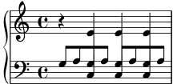

Cross-staff chords – beaming problems workaround
Sometimes it is better to use stems from the ‘other’ staff for creating cross-staff chords to trick LilyPond’s beam collision detector. In the following snippet, if the stems from the lower staff were used instead, it would be necessary to explicitly use
\override Staff.Beam.collision-voice-only = ##t
so that LilyPond doesn’t move the beams.
\new PianoStaff << \new Staff = up \relative c' << { r4 \override Stem.cross-staff = ##t \override Stem.length = #19 % this is in half-spaces, % so it makes stems 9.5 staffspaces long \override Stem.Y-offset = #-6 % stems are normally lengthened % upwards, so here we must lower the stem by the amount % equal to the lengthening - in this case (19 - 7) / 2 % (7 is default stem length) e e e } { s4 \change Staff = "bottom" \override NoteColumn.ignore-collision = ##t c, c c } >> \new Staff = bottom \relative c' { \clef bass \voiceOne g8 a g a g a g a } >>
